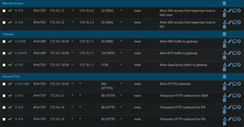
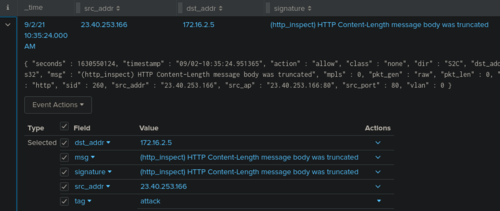

Building my Virtual Cybersecurity Home Lab
I have recently realized that one part of cybersecurity that I am lacking basic knowledge on is networking. I honestly did not think it was important when I was starting. It was the reason why I skipped Network+ so I could take Security+ directly.
Now I know better.
Ever since my realization, I have taken steps to patch the holes in my knowledge. I've started taking courses and bought books. But one thing that has made the most impact is me building my very own "homelab".
I first came to know of the concept of homelabs from Reddit. To those unfamiliar, it is the practice of building a networked environment to gain practical knowledge in networking and IT. One way to do this is by making a virtual network.
And so, over the past month, I have been building my very own virtual homelab with a focus on integrating cybersecurity products.
The Lab
The network diagram below shows the current implementation of my lab. I will be discussing each part to give an idea of their purpose (Click here for a bigger version).
{kind=link}

At the heart of the network is a firewall running pfSense. Its purpose is to ensure that each sub-network is separated and protected, and also to protect my virtual host from any malware outbreaks. This machine also serves as a DHCP and NTP server to all the machines in the network.

The Target Network
On the right side of the diagram is the "Target" network where workstations and vulnerable servers reside. These are the machines that I use to attack with exploits and malware.

I have Metasploitable 2 and Metasploitable 3 machines that have various services turned on to play around with. I can learn about specific attacks by exploiting this machine, but I can also don my defenders hat and learn about how to secure them.
The Windows and Linux machines will serve as typical workstations for various experiments.
One of the perks of my job is that I get to play with different cybersecurity solutions. I currently have access to a few that I am able to use on my lab for testing.
One solution that I am using right now is an EDR (Endpoint Detection and Response) (Sorry, I can't reveal which). Each machine has an EDR agent deployed which monitors for any malicious activities on the host. It has an anti-virus feature, anti-ransomware, and fileless attack monitoring. It's awesome stuff but I have yet to maximize this.
An IDS (intrusion Detection System) running Snort monitors the traffic for any malicious activity. Signatures are constantly updated to ensure that I can detect the latest types of attack. If it finds anything important, it then sends an alert to a SIEM (running Splunk) on the Management network.

The Management Network
On the left side of the diagram is the Managemnet network. This is where the management part of the EDR, IDS, and the SIEM can be accessed from my virtual host.

There's nothing special about this network, I do want to note though that I find it interesting the Snort IDS has two interfaces. One is used for access to the management page, and the other is for sniffing traffic on the Attacker network.
The Operations Network
At the bottom side of the diagram is the "Operations" network.
A machine running Kali is placed here. I can launch attacks from this machine towards the vulnerable machines on the Target network. This machine also has OpenVAS scanner that helps in discovering vulnerabilities on the target machines.

A windows machine serves as my malware analysis lab. It contains a lot of malware analysis tools to aid with investigations.
This machine is then connected to a Remnux Linux machine. All traffic from the Windows machine is port forwarded by Remnux. From here I can run Wireshark to inspect the traffic coming from the Windows malware lab and it can also spoof the network responses to influence the behavior of malware. If the Remnux machine is turned off, then the Windows machine is effectively cut off from the whole network. It's a really neat setup that I learned here.
The Present
While the main intent of the network is to learn networking and implementing cybersecurity products, I can also investigate malware and learn about exploits by launching attacks. So it has a lot of multiple uses, which is perfect for someone like me who gets interested in different aspects of cybersecurity.
My host machine currently has 32GB, 8 cores, and a total of 1.75TB which may seem a lot but is not powerful enough for all the machines to run at the same time. As a workaround, I just open the machines that I need for a particular exercise.

For example, if I want to investigate malware then I only need the firewall, Remnux, and the windows malware lab open. But if I want to attack and run an exploit, while making sure that it gets detected, then I need the firewall, EDR, IPS, SIEM, Kali, and the target machine to be open at the same time. This easily consumes around 20GB+!
The Future
Working on this homelab has taught me a lot of practical knowledge. It helped solidify a lot of networking concepts I've learned througout the years.
I'm not stopping here though. I also plan to upgrade the Target network so it would better resemble an enterprise network. For example, setting up an active directory, an internal DNS server, and maybe even a mail server (why not?). This is so I could play around in detecting and remediating more varied enterprise-level scenarios.
I am also hoping I could get access to more cybersecurity products so I could play around with them. A SOAR (Security Orchestration and Response) would be a nice addition that would work really well.
But, of course, before I could do any of the above I first need to upgrade my RAM and add more cores!